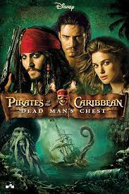
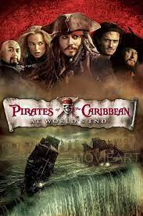
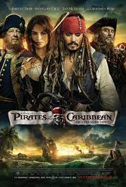
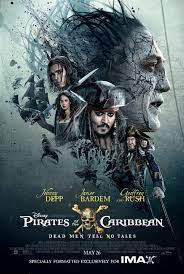
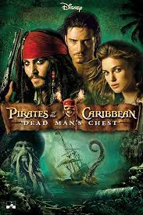
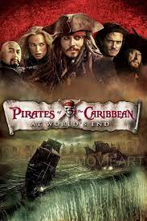
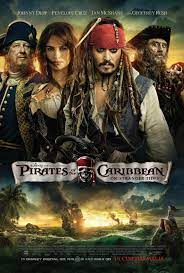
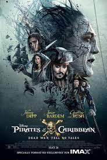

Did you know that the POTC movies were based on the Disneyland and Walt Disney World ride? The movies consistantly pulled sound effects and scenes that originate from the ride. The ride, which was the largest audio-animatronic project to date, first opened in 1973 at Disneyland in California. The pirates of the caribbean ride was also the last attraction with design involvement from Walt Disney.
There are five six movies in the Pirates of the Caribbean series. What many people do not
know is that there is a short film called Tales of the Code: Wedlocked that serves as a prequel to Pirates
of the Caribbean: Curse of the Black Pearl. The movies were released in 2003, 2006, 2007, 2011, 2011, & 2017
respectively. Although the pirates in the movies are based on historical facts, the character of Jack Sparrow is a
combination of several different pirates that were popular in the 1700s. The famous 'Yo Ho, Yo Ho, A Pirates Life For
Me!' song was written by Xavier Atencio. This is the order in which to watch the POTC movies:
 







Here are some websites to check out if you want to learn more about the POTC movies:
Thanks for reading my website! Feel free to contact me here if you want to chat more about POTC fun facts.
Check out some HTML code...
<!doctype html>
<html lang="en">
<head>
<title>Lauren tries to learn HTML</title>
<h1>Pirates of the Caribbean is quite exciting!</h1>
<h2>Here are some fun facts:</h2>